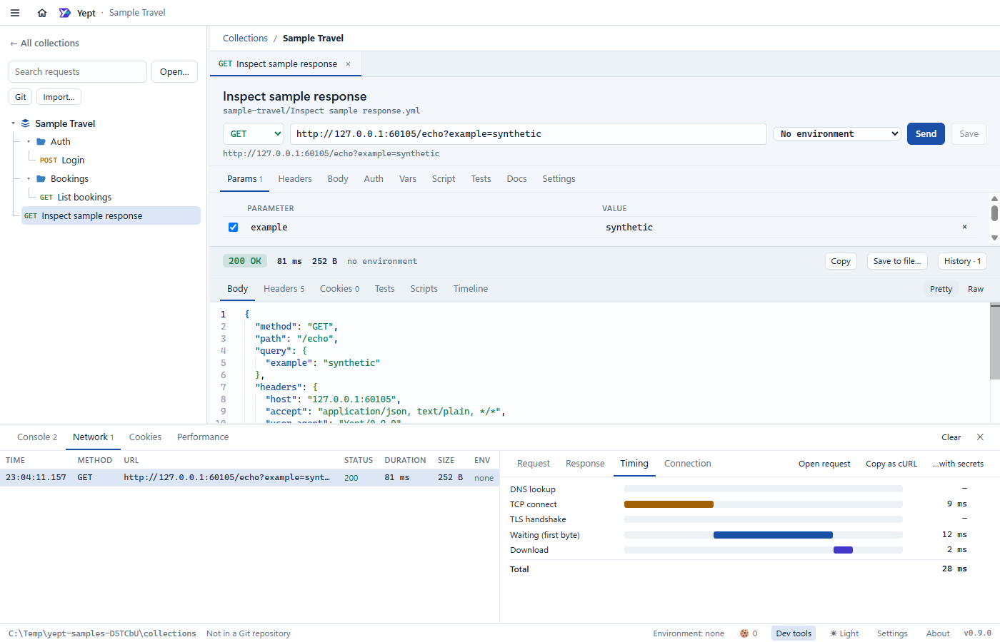

Send
Compose requests with environments, encrypted local secrets, OAuth2 and scripts. Unresolved variables stop the send before it leaves your machine.
The API client that shows what really happened between your request and its response. Local-first, built on plain files you can review in Git. No account, no telemetry.
Free and open source · MIT licensed

Debugging an integration is the same loop every time. Yept is built around it.
Compose requests with environments, encrypted local secrets, OAuth2 and scripts. Unresolved variables stop the send before it leaves your machine.
See redirect hops, the headers actually sent, timings, TLS details, cookies and the reconstructed raw HTTP. Copy a masked cURL in one click.
Replay from redacted history, run a whole collection in order with assertions, and commit the result so your team can do the same.
Browser-style tooling for any HTTP call: Console, Network, Cookies and Performance, one keystroke away.
A focused desktop client for the work developers actually do against HTTP APIs.
Headers, query params, JSON, text, XML, URL-encoded forms and multipart file uploads, with a syntax-aware editor.
Switch environments in a click. Secrets live encrypted on your computer, never in the files you share.
Bearer, basic, API key, Digest, NTLM, AWS Signature v4 and OAuth2 (client credentials, authorisation code with PKCE, password), with tokens cached and renewed.
Pre- and post-request scripts, assertions and chained requests, compatible with Bruno scripts.
Run a folder or a whole collection with CSV or JSON data, repeats and delays. Export JUnit XML or an HTML report.
Redacted before it is stored, and it follows a request when you rename or move its file.
Bring in Postman, Insomnia, OpenAPI and Bruno. Paste a cURL command to create a request instantly.
Light, dark and high-contrast themes, plus the installed fonts and code size you prefer.
Works behind a company proxy: Windows settings, setup scripts or a manual proxy with sign-in. Client certificates for APIs that need mutual TLS.
Requests are plain, diff-friendly Bruno OpenCollection YAML. Share them the way you share code, in the repo you already have.
Yept talks to the APIs you choose and the Git remotes you've configured. That's it.
Download the installers from GitHub Releases. They are unsigned, so check each file against SHA256SUMS.txt and follow the install steps in the README.
Primary platform. An NSIS installer; unsigned, so Windows SmartScreen asks before it runs.
Extension for the Visual Studio Marketplace and Open VSX, prepared for pre-release.
DMG or ZIP for Apple Silicon and Intel. Not signed or notarized; the README shows how to open it.
No desktop Linux package at this time.
No. Yept has its own application shell and request pipeline. It reuses Bruno's MIT-licensed file-format and scripting packages so collections stay compatible. Bruno is a trademark of its owners and Yept is not affiliated with them.
No. There is no sign-up, no cloud and no telemetry. Collections stay in your folders.
Encrypted on your computer, outside the collection files you commit. Secrets are masked in the interface, in copies and in history unless you explicitly include them.
Yes. Yept imports Postman, Insomnia, OpenAPI and Bruno files, moving literal secrets out of shared files, and exports a bundled OpenCollection file.
Windows is the primary platform. macOS installers for Apple Silicon and Intel are on the releases page; they aren't signed or notarized yet. There is no Linux package.